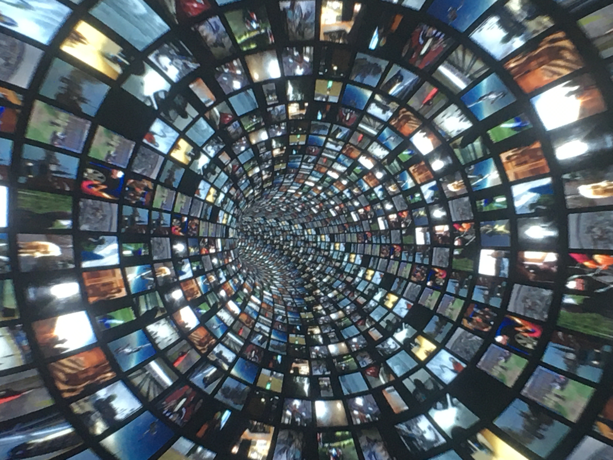
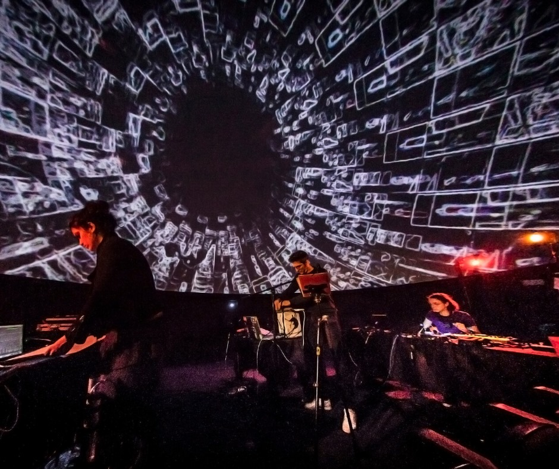

Planetarium - Vaulx-en-Velin
Curator: Pierre Amoudruz
Immersive performance under 180° dôme
The performance presented during the « Souvenirs du futur » restitution consists of a 180° dome video with an experimental music composition for voice, waterphone, hard disk and prepared guitar. /br>
It develops a relationship to time that is no longer a chronological one, but a flow where past and future mingle. The dome thus recreates a kind of immersion in an individual’s consciousness. /br>
The textures of 3D graphics are made of infinite video databanks, like bits of memory that intertwine with videos of memories that ultimately form a vision of a future. /br>
Inspired by Chris Marker’s « La Jetée » and Bergson’s thought on the relationship to space and time, the real-time immersion and processing of images and sound try to transfigure this notion of duration. /br>
“What we actually perceive is a certain thickness of time that consists of two parts: our immediate past and our imminent future. On this past we have leaned, on our future we are bent: to lean and to bend so is the proper of a conscious being. So let’s say, if you will, that consciousness is a link between what has been and what will be, a bridge between the past and the future.”
Pics:

